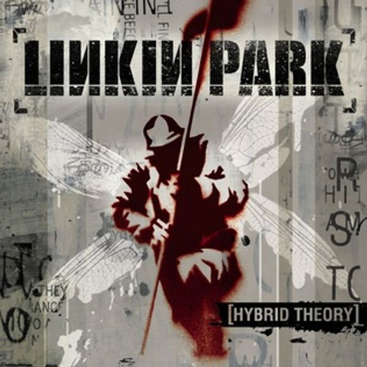
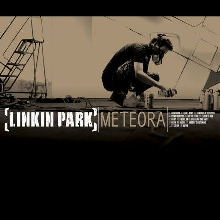
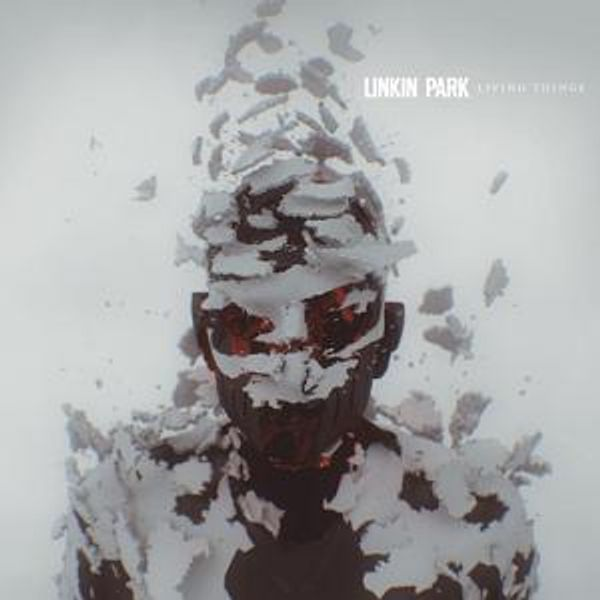
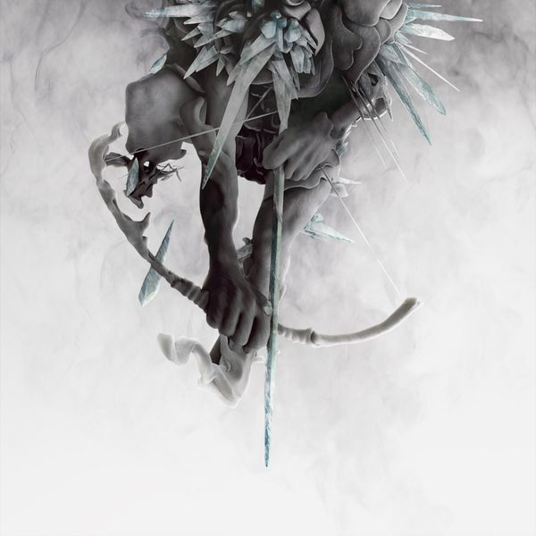
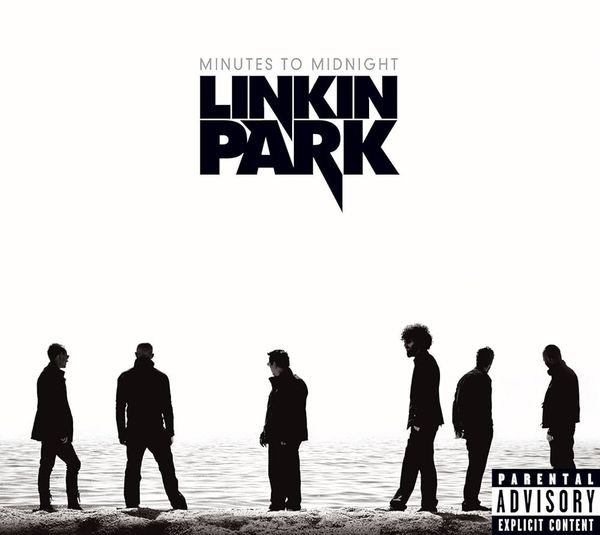

Discografia






Linkin Park é uma banda de rock dos Estados Unidos formada em Agoura Hills, Califórnia. A formação atual da banda inclui o vocalista e multi-instrumentista Mike Shinoda, o guitarrista Brad Delson, o baixista Dave Farrell, o DJ Joe Hahn, a vocalista Emily Armstrong e o baterista Colin Brittain. A formação do grupo em seus sete primeiros álbuns de estúdio incluía o vocalista Chester Bennington e o baterista Rob Bourdon; após o suicídio de Bennington em julho de 2017, a banda entrou em um hiato por tempo indeterminado. Em setembro de 2024, Linkin Park retornou às atividades com as adições de Armstrong e Brittain. O vocalista Mark Wakefield e o baixista Kyle Christner são ex-membros da banda.
| Música | Plays |
|---|---|
| Numb | 3b- |
| In The End | 2b+ |
| What I've Done | 1b+ |
| Faint | 750m+ |
| Crawling | 750m- |
| Burn It Down | 700m+ |
| One Step Closer | 550m+ |